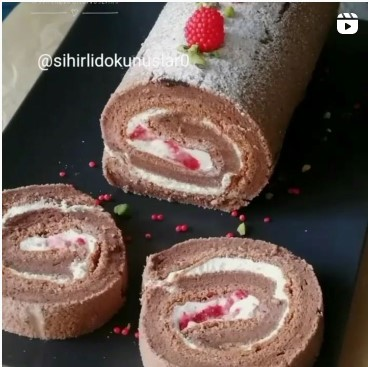

|

|
Kaç Kişilik:4-6 Kişilik
Hazırlama Süresi:40 - 45dk
Pişirme Süresi:35dk
Kakaolu Pasta Tarifi İçin Malzemeler:
- 6 tane yumurta
- 1 çay bardağı toz şeker
- Yarım çay bardağı süt
- Yarım çay bardağı sıvıyağ
- 1 paket vanilya
- 1 yemek kaşığı kakao
- Bir fiske tuz
- 1 su bardağı un
- Yumurta beyazları, şekerin tamamı ve bir fiske tuz mikersin en yüksek devrinde 5-6 dakika çırpılır.
- Başka bir kapta yumurta sarıları, süt ve sıvıyağı ile birlikte 2-3 dakika karıştırılır. Kakaou, un ve vanilya elenerek ilave edilir.
- Yumurta beyazlı karışımın üçte biri yumurta sarıları ile olan karışıma eklenir, ve el çırpıcısı ile karıştırarak hamur akıcı hale getirilir.
- Daha sonra yumurta beyazlı karışımın tamamı ilave edilir. Spatula yardımı ile aşağıdan yukarı dairesel hareketlerle karıştırılır.
- Yağlı kağıt serilmiş 37x24cm boyutlarında dikdörtgen kalıba hamur karışımı dökülür.
- Önceden ısıtılmış 120 dereceli fırında 20dk daha sonra fırının derecesini 150 dereceye çıkartıp 15 dakika pişirilir.
- İç kreması için 2 poşet toz krem şanti 1 çay bardağı soğuk süt ile mikserin yüksek devirde 3-4 dakika çırpılır.
- Kenarından başlayarak uzunlamasına küp şeklinde kesilmiş çilekler konur.
- Pastayı yağlı kağıda sarıp rulo haline getirilir. Birkaç saar buzdolabında bekletilir ve servise hazır hale gelir.
Afiyet olsun
|